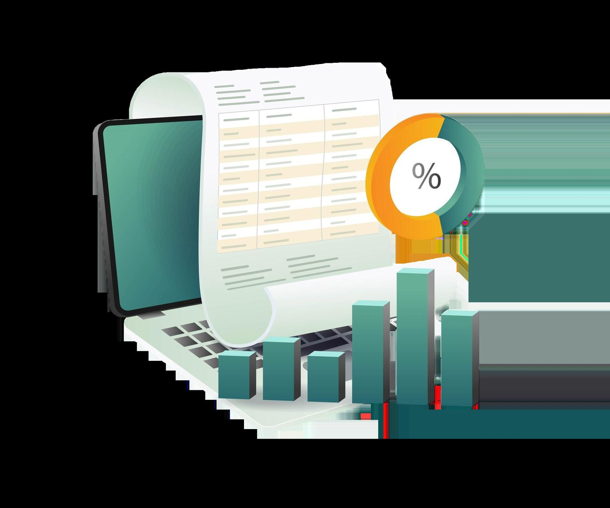

Autolønn
Autolønn
0 Hopp til innhold Hjem Tjenester Regnskap Controller Lønn Autolønn Din økonomisjef Ledige stillinger Podcast Om oss Kontakt Priskalkulator Åpne meny Lukk meny Hjem Tjenester Regnskap Controller Lønn Autolønn Din økonomisjef Ledige stillinger Podcast Om oss Kontakt Priskalkulator Åpne meny Lukk meny Hjem Mappe: Tjenester Tilbake Regnskap Controller Lønn Autolønn Din økonomisjef Ledige stillinger Podcast Om oss Kontakt Priskalkulator “All inclusive” og skybasert regnskap Vi gjør ting på andre måter.
Fra tall til verdi. Hos Abacus Ratio er vi mer enn bare et regnskapsbyrå. Vi leverer levende og alltid oppdaterte råd og regnskaper som hjelper deg å ta smartere valg. Samtidig deler vi de effektiviseringsgevinstene vi skaper – alt for å gjøre hverdagen din enklere. Rett og slett; vi leverer litt mer enn du forventer. Velkommen til oss!
Kunstig intelligens er verken kunstig eller intelligent. Det er matematikk. På seminaret 2. september gikk Geir Braathe gjennom hva teknologien faktisk er og hva den betyr for ledelsen. han snakket også om hvorfor gevinsten først kommer når organisasjonen endrer måten den jobber på. Underveis deler Abacus Ratio egne erfaringer, både det som fungerte og det som ikke gjorde det.
Seminaret er laget for daglige ledere og ledergrupper som vil forstå hva som skjer, og som vil vite hvor de bør begynne.

Kort fortalt: hva trenger du?
Beskriv saken, så svarer vi med hva det krever og hva det koster.